<title>Settings in tabs</title>
<meta name="claude:viewport-fit-sides" content="cover">
<link rel="stylesheet" href="tokens.css">
<!-- A mockup (design-system skill, references/mockups.md). Every picture is the real app, signed in
     as the demo account, with the proposal drawn into its page before the screenshot. -->
<style>
  body { margin: 0; background: var(--canvas); color: var(--ink); font-family: var(--font-sans); }
  .mockup-page { padding-left: max(16px, env(safe-area-inset-left, 0px)); padding-right: max(16px, env(safe-area-inset-right, 0px));
    padding-block: var(--space-8, 32px) var(--space-16, 64px); max-width: 1360px; margin: 0 auto; display: grid; gap: var(--space-12, 48px); }
  .mockup-head { display: grid; gap: var(--space-2, 8px); max-width: 70ch; }
  .mockup-head h1, .option h2, .option h3 { margin: 0; text-wrap: balance; }
  .mockup-head p, .option p, .option li { margin: 0; }
  .option ul.points { margin: 0; padding-left: 1.2em; display: grid; gap: 4px; max-width: 75ch; }
  .mockup-meta { color: var(--ink-secondary); }
  .option { display: grid; gap: var(--space-4, 16px); border-top: 1px solid var(--line); padding-top: var(--space-8, 32px); }
  .option-head { display: flex; flex-wrap: wrap; align-items: baseline; gap: var(--space-2, 8px) var(--space-3, 12px); }
  .option-tag { color: var(--ink-secondary); }
  .option[data-recommended] .option-tag::after { content: " · Recommended"; color: var(--ink); }
  .decided { color: var(--ink-secondary); }
  .shots { display: grid; grid-template-columns: repeat(auto-fit, minmax(min(100%, 520px), 1fr)); gap: var(--space-4, 16px); }
  .phones { display: grid; grid-template-columns: repeat(auto-fit, minmax(min(100%, 260px), 330px)); gap: var(--space-4, 16px); }
  figure { margin: 0; min-width: 0; display: grid; gap: var(--space-2, 8px); align-content: start; }
  figure img { display: block; width: 100%; height: auto; border: 1px solid var(--line); border-radius: var(--radius-lg, 10px); }
  figcaption { color: var(--ink-secondary); }
  :focus-visible { outline: 2px solid var(--focus); outline-offset: 2px; }
</style>

<main class="mockup-page">
  <header class="mockup-head">
    <p class="caption mockup-meta">Mockup · 2026-11-14 · Tracker</p>
    <h1 class="title-1">Settings in tabs</h1>
    
    <p class="body">Settings splits into tabs under its title, with Connections on a tab of its own. The
      tab bar is plain: each tab's name, in <code>ink-secondary</code>, and the open one in
      <code>ink</code> with a 3px <code>ink</code> rule under it. The page under the tabs keeps its rows.</p>
    <p class="body">Each tab gets its own address, so <code>#/settings/connections</code> opens
      Connections directly. Claude's connect page and the new-connection banner can link straight there.</p>
    <p class="body decided"><strong>Decided:</strong> C, one tab per section (John, 14 November).</p>
  </header>
  <section class="option" id="a" data-recommended aria-labelledby="a-h">
  <div class="option-head"><h2 class="title-2" id="a-h">A. Two tabs: General and Connections</h2><span class="label option-tag">Option A</span></div>
  
  <p class="body">General keeps Appearance, Daily goal and Your data. Connections gets its own tab. This is the smallest change that does what you asked.</p>
  <div class="shots">
<figure>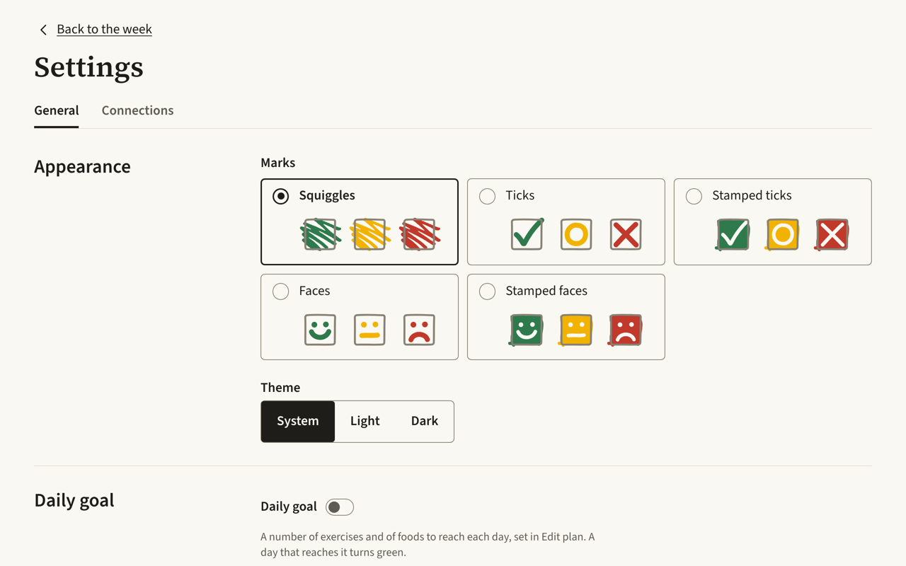<figcaption class="caption">Desktop · Light</figcaption></figure>
<figure>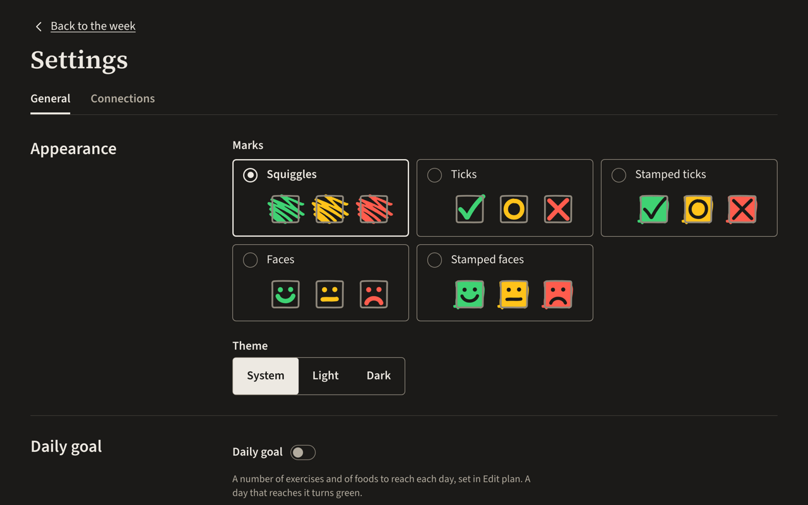<figcaption class="caption">Desktop · Dark</figcaption></figure>
</div>
<div class="phones">
<figure>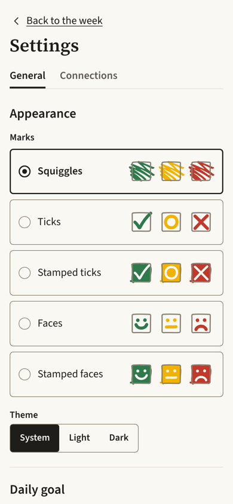<figcaption class="caption">Phone · Light</figcaption></figure>
<figure>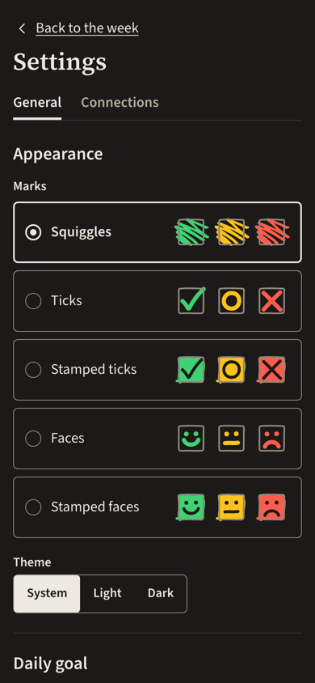<figcaption class="caption">Phone · Dark</figcaption></figure>
</div><h3 class="title-3">The Connections tab</h3><div class="shots">
<figure>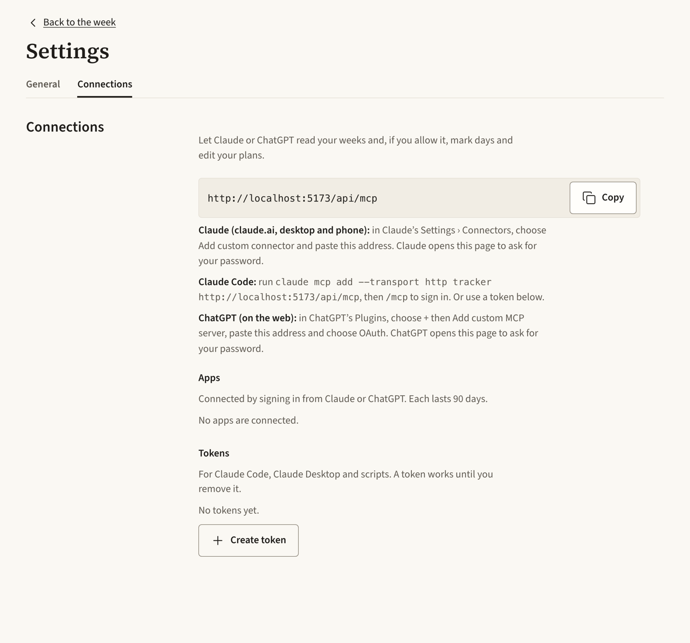<figcaption class="caption">Desktop · Light</figcaption></figure>
<figure>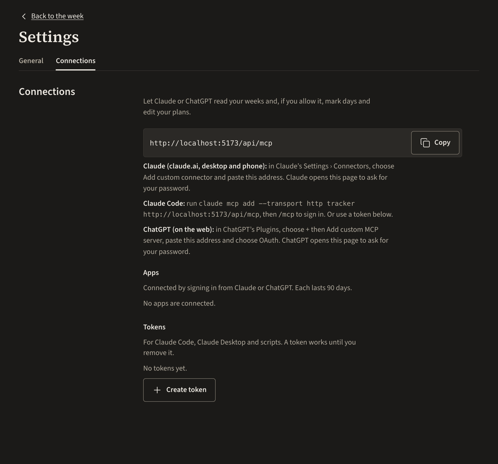<figcaption class="caption">Desktop · Dark</figcaption></figure>
</div>
<div class="phones">
<figure>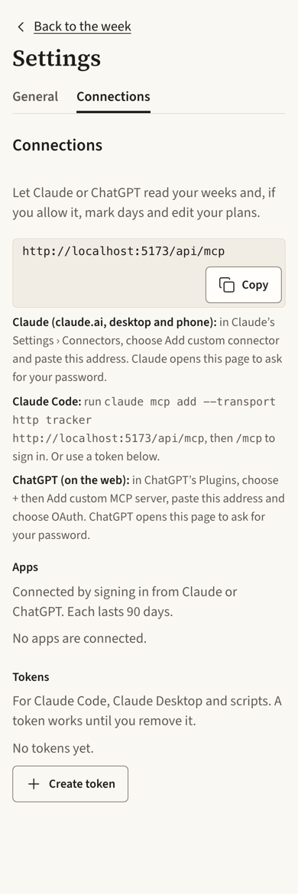<figcaption class="caption">Phone · Light</figcaption></figure>
<figure>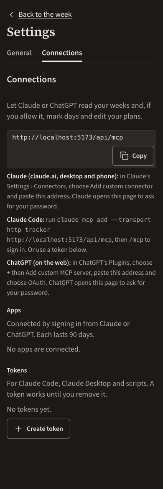<figcaption class="caption">Phone · Dark</figcaption></figure>
</div>
</section><section class="option" id="b" aria-labelledby="b-h">
  <div class="option-head"><h2 class="title-2" id="b-h">B. Three tabs: General, Your data, Connections</h2><span class="label option-tag">Option B</span></div>
  
  <p class="body">Export and import move to a tab of their own as well.</p>
  <div class="shots">
<figure>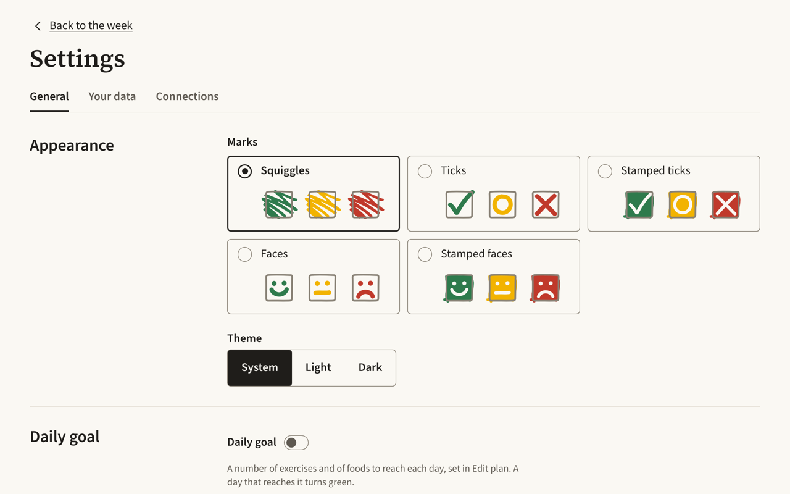<figcaption class="caption">Desktop · Light</figcaption></figure>
<figure>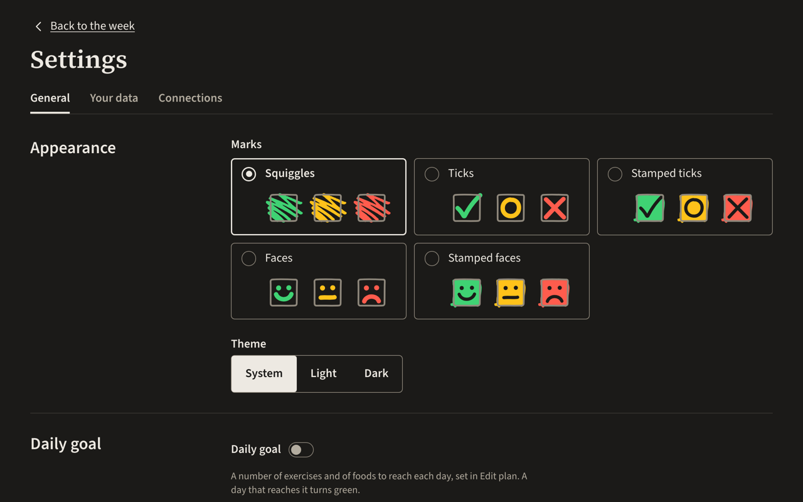<figcaption class="caption">Desktop · Dark</figcaption></figure>
</div>
<div class="phones">
<figure>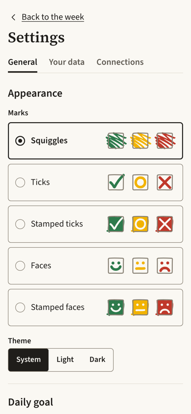<figcaption class="caption">Phone · Light</figcaption></figure>
<figure>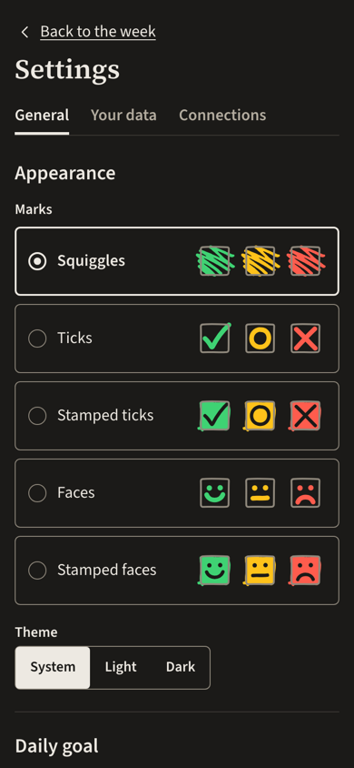<figcaption class="caption">Phone · Dark</figcaption></figure>
</div>
</section><section class="option" id="c" aria-labelledby="c-h">
  <div class="option-head"><h2 class="title-2" id="c-h">C. One tab per section</h2><span class="label option-tag">Option C</span></div>
  
  <p class="body">Appearance, Daily goal, Your data and Connections. On a phone the four tabs wrap onto two lines, and Daily goal is one switch on a tab of its own.</p>
  <div class="shots">
<figure>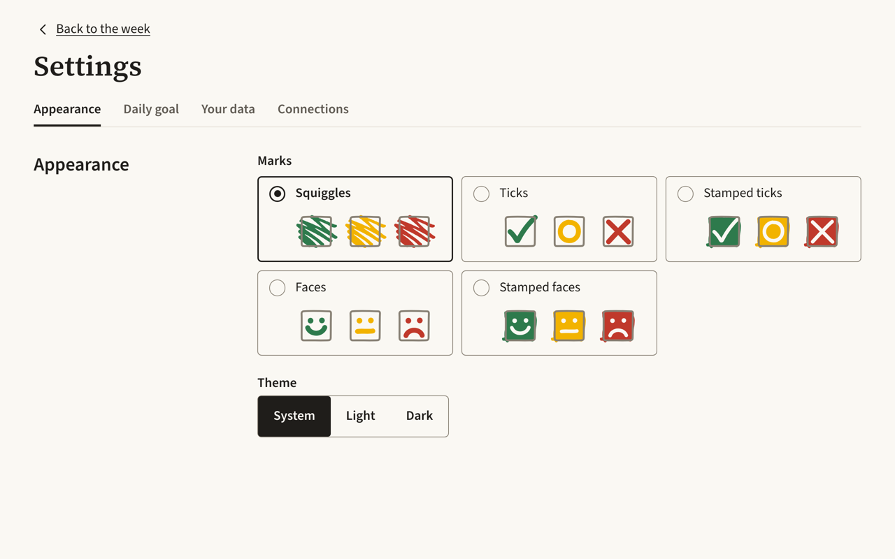<figcaption class="caption">Desktop · Light</figcaption></figure>
<figure>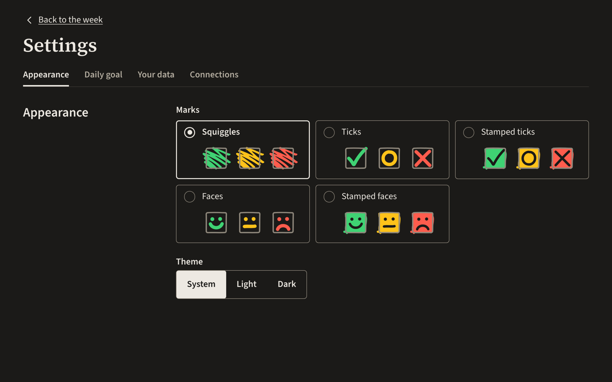<figcaption class="caption">Desktop · Dark</figcaption></figure>
</div>
<div class="phones">
<figure>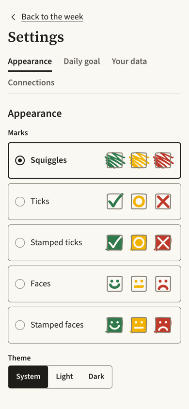<figcaption class="caption">Phone · Light</figcaption></figure>
<figure>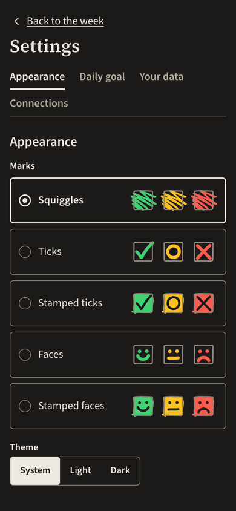<figcaption class="caption">Phone · Dark</figcaption></figure>
</div>
</section><section class="option" id="now" aria-labelledby="now-h">
  <div class="option-head"><h2 class="title-2" id="now-h">Today's Settings page</h2><span class="label option-tag">For comparison</span></div>
  
  <div class="shots">
<figure>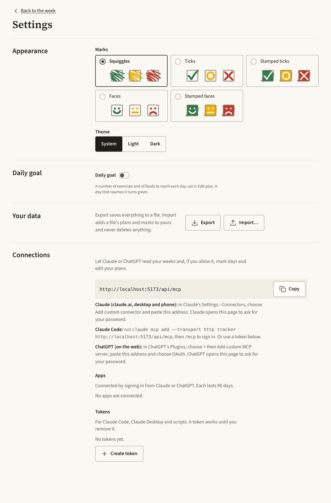<figcaption class="caption">Desktop · Light</figcaption></figure>
<figure>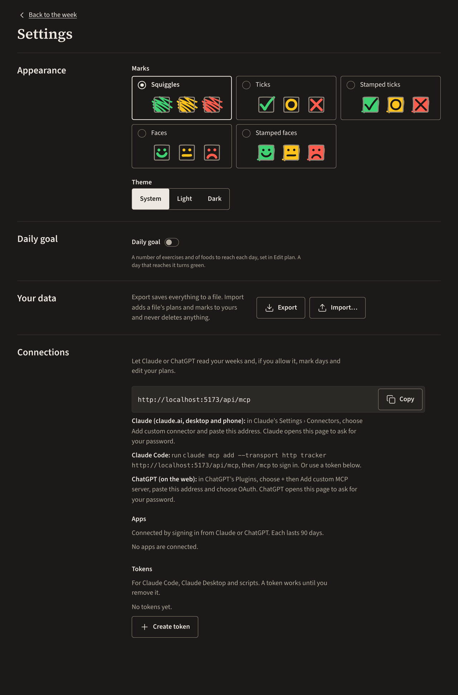<figcaption class="caption">Desktop · Dark</figcaption></figure>
</div>
</section>
</main>
